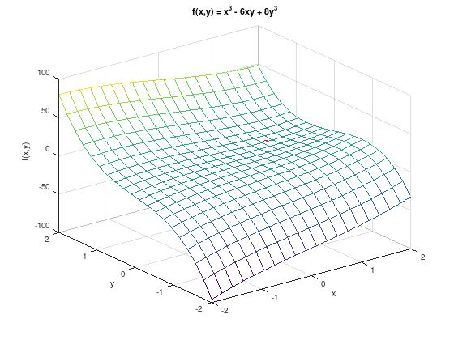

UM02¶
Consider the function \(f(x,y) = x^{3} - 6xy + 8y^{3}\).
1. Create a plot of \(f\) for \(-2 \leq x,y \leq 2\).
f = @(x,y) x.^3 - 6.*x.*y + 8.*y.^3;
[x, y] = meshgrid (linspace (-2, 2, 20));
mesh (x, y, f(x,y));
grid on;
xlabel ('x');
ylabel ('y');
zlabel ('f(x,y)');
title ('f(x,y) = x^3 - 6xy + 8y^3');
hold on;
plot3 (1, 0.5, -1, 'ro');

2. Compute the gradient \(\nabla f\) and the Hessian matrix \(\nabla^{2} f\).
Solution:
3. Compute all stationary points and the respective function values.
Solution:
Stationary points: \(\nabla f = 0\).
From the first equation follows \(y = \frac{1}{2} x^{2}\). The resulting equation
yields the stationary points \(P_{1} = (0,0)^{T}\) with \(f(P_{1}) = 0\) and \(P_{2} = (1,0.5)^{T}\) with \(f(P_{2}) = -1\).
4. Classify all stationary points.
Solution:
Hessian matrix at \(P_{1}\):
Classification with eigenvalues (roots of the characteristic polynomial):
The roots of the characteristic polynomial are positive and negative. Thus the Hessian matrix is indefinite and \(P_{1}\) is a saddle point.
Hessian matrix at \(P_{2}\):
Classification with eigenvalues (roots of the characteristic polynomial):
The roots of the characteristic polynomial are all positive. Thus the Hessian matrix is positive definite and \(P_{2}\) is a strict local minimum.
5. Numerical experiments.
Study um02_experiment in Matlab/Octave.